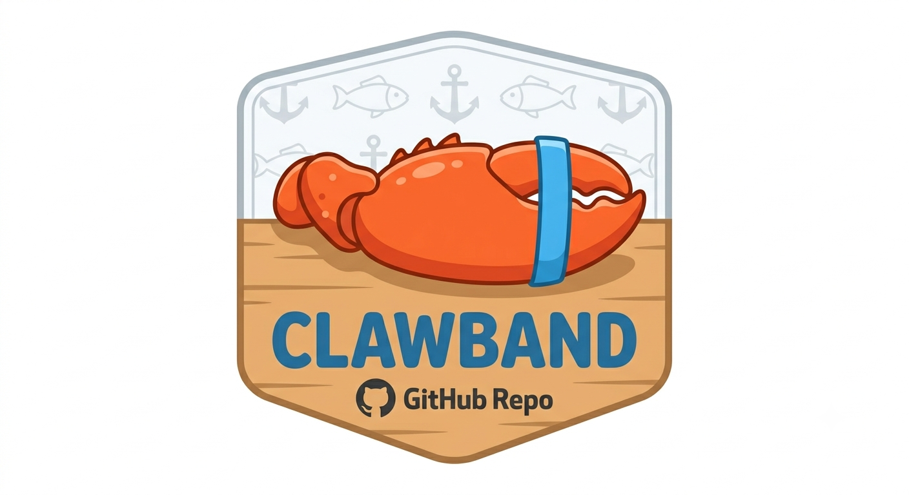

The built-in Bash deny list gives you a false sense of security.
clawband actually stops destructive commands.
git clone https://github.com/jamessoubry/clawband && bash clawband/install.sh
Requires jq — pre-built binaries for Linux x86_64, macOS arm64, macOS x86_64. Rust only needed as a fallback.
brew install jamessoubry/clawband/clawband
Homebrew installs the binary — register the hook afterwards (brew info clawband shows how).
settings.json. You add rm -rf.
You feel protected. You're not.This hook blocks what actually matters. Two ways to use it:
Keep Claude Code's permission prompts active. Use clawband to guarantee that no compound-command trick or bypass can sneak a destructive command through — even when Claude hallucinates or gets prompt-injected.
Add patterns you trust to your allow.patterns file to stop being asked about them. clawband still hard-blocks anything catastrophic — you just stop approving the same safe commands over and over.
Turn off all of Claude Code's permission prompts (bypassPermissions mode). Your agent runs freely without grinding to a halt every few seconds.
clawband becomes your safety net — automatically blocking filesystem destruction, supply-chain attacks, and infra wipeouts before they execute. Semi-autonomous without the terror.
Registered as a PreToolUse hook — fires before Claude's Bash tool executes anything.
The built-in deny list never sees inside echo hi && rm -rf /. clawband splits first, checks every segment independently.
Catastrophic patterns are hard-blocked. Risky-but-legitimate ones prompt for approval. Everything else passes instantly.
When a command runs a script (bash foo.sh, ./run.sh, bash < script), clawband reads the file and checks every line before execution.
If a compound command writes to a file and immediately runs it (echo "..." > run.sh && bash run.sh), clawband flags it — the content can't be scanned between write and execute.
Written in Rust. Single binary, no subprocesses. ~30ms per hook call vs ~380ms for an equivalent bash implementation.
| Category | Examples | Verdict |
|---|---|---|
| File system destruction | rm -rf /, rm -rf ~, sudo rm -rf, mkfs, dd if= |
deny |
| Silent file truncation | truncate -s 0 |
deny |
| Infrastructure | terraform destroy, kubectl delete --all |
deny |
| AWS destructive ops | aws s3 rm --recursive, aws cloudformation delete-stack, aws lambda delete-function |
deny |
| Pipe to interpreter | | bash, | sh, | python, | node, | ruby, | perl |
deny |
| Heredoc to interpreter | bash <<, python << |
deny |
| find / xargs escalation | find … -delete, -exec bash, xargs sh |
deny |
| Pipe to DB / system tools | | psql, | mysql, | patch, | crontab |
deny |
| git force push | git push --force, git push -f |
deny |
| eval | eval "$(brew shellenv)" — common but executes arbitrary strings |
ask |
| Destructive git (local) | git reset --hard, git checkout -- , git stash drop |
ask |
| git clean | git clean -f, git clean -fd — wipes untracked files |
ask |
| git push --delete | Remote branch deletion | ask |
| Safe inline code | | python3 -c "…", | python3 -m mod, --force-with-lease |
pass |
Extend or override the built-in lists without touching the binary. Create files in ~/.clawband/ — one case-insensitive regex per line.
Manage your pattern lists without editing files. Changes take effect immediately — no restart needed.
The installer also adds /allow and /deny Claude Code slash commands so you can update your lists without leaving the chat. When clawband prompts for approval it includes the exact clawband allow command to silence it permanently.